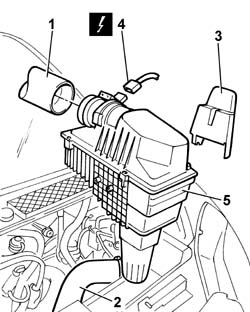
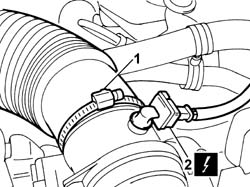
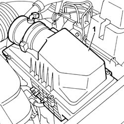
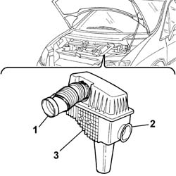

1048A10 AIR FILTER ASSEMBLY - R.R.
- Path
- Procedures > 10 ENGINE > 1048 ENGINE AIR SUPPLY CIRCUIT > 1048A VACUUM AIR CIRCUIT > 1048A10 AIR FILTER ASSEMBLY - R.R.
- Kind
- repair procedure (removal / refitting; the operation number is the code)
- Applies to
- all engines; all production periods
- Interactive page
- https://sloeber94.github.io/elrnDB-fUlss/en/#/179006998
Applies to: engines: 2.0 16V JTD; all production periods
 Removing
Removing
 Refitting
RefittingOp. 5010B18 HEATING VENTILATION UNIT AIR INTAKE - R+R
- Disconnect the negative battery terminal.
1. Disconnect the turbocharger air intake hose from the air filter casing.
2. Disconnect the air hose from the air/air heat exchanger.
3. Remove the protective cover for the mechanical vehicle lifting device.
4. Disconnect the electrical connection for the air flow meter.
5. Remove the air filter casing from the engine compartment.

Applies to: engines: 2.0 16V JTD; all production periods
Refitting
Removing- Fit the air filter casing in the engine compartment.
- Fit the protective cover for the mechanical vehicle lifting device.
- Connect the electrical connection for the air flow meter.
- Connect the air hose to the air/air heat exchanger.
- Connect the turbocharger air intake hose to the air filter casing.
- Connect the negative battery terminal.
Applies to: engines: 2.2 16V JTD; all production periods
Removing
RefittingOp. 5010B18 HEATING VENTILATION UNIT AIR INTAKE - R+R
- Disconnect the negative battery terminal.
- Disconnect the turbocharger air intake hose from the air filter casing.
- Disconnect the air hose from the air/air heat exchanger.
- Remove the protective cover for the mechanical vehicle lifting device.
- Disconnect the electrical connection for the air flow meter.
- Remove the air filter casing from the engine compartment.
Applies to: engines: 2.2 16V JTD; all production periods
Refitting
Removing- Fit the air filter casing in the engine compartment.
- Fit the protective cover for the mechanical vehicle lifting device.
- Connect the electrical connection for the air flow meter.
- Connect the air hose to the air/air heat exchanger.
- Connect the turbocharger air intake hose to the air filter casing.
- Connect the negative battery terminal.
Applies to: engines: 3.0 24V V6; all production periods
Removing
RefittingOp. 5010B18 HEATING VENTILATION UNIT AIR INTAKE - R+R
- Disconnect the negative battery terminal.
 | Description | Connector |
|---|---|---|
. | Battery |
1. Loosen the band and disconnect the air pipe.
2. Disconnect the electrical connection from the intake air temperature sensor.
| Description | Connector |
|---|---|---|
2 | Air temperature sensor |

Applies to: engines: 3.0 24V V6; all production periods
1. Release the air filter casing assembly from the mounting and remove it from the vehicle.

Applies to: engines: 3.0 24V V6; all production periods
Refitting
Removing- Position the air filter casing assembly on the support
- Connect the air pipe and tighten the band.
- Connect the electrical connection to the intake air temperature sensor.
| Description | Connector |
|---|---|---|
. | Air temperature sensor |
- Connect the negative battery terminal.
| Description | Connector |
|---|---|---|
. | Battery |
Applies to: engines: 2.0 16v; all production periods
Removing
Refitting1. Act on the band and release the hose.
2. Acting on the fastening clips, release the resonator from the air filter.
3. Remove the air filter assembly.

Applies to: engines: 2.0 16v; all production periods
Refitting
RemovingFit the air filter assembly.
Restore the fastenings to the hose and to the resonator.
See
Op.
1048A11
AIR FILTER ASSEMBLY - R.R. FOR VERSIONS WITH AUTOMATIC TRANSMISSION
See
Op.
1048A14
AIR FILTER FILTER ELEMENT - REPLACE
Topics linked from this page (1)
Topics that link to this page (32)
- X01 EXCESSIVE FUEL CONSUMPTION
- 0010T67 HYDRAULIC CLUTCH SYSTEM BLEED AIR
- 1004B14 POWER UNIT WITH AUTOMATIC TRANSMISSION R + R
- 1008A42 POWER UNIT RIGID SUPPORT - GEARBOX SIDE - R.R.
- 1008B30 GEARBOX SIDE SUPPORT FLEXIBLE MOUNTING(S) - REPLACE
- 1016C10 SINGLE CYLINDER HEAD - R.R. AND REPLACE GASKET
- 1016B10 SINGLE CAMSHAFT HOUSING - REPLACE GASKET
- 1016B12 SINGLE CAMSHAFT HOUSING - R.R. WITH TIMING BELT REMOVED - REPLACE GASKET
- 1024F30 ENGINE BALANCING SHAFTS - R.R.
- 1028H10 PISTON WITH CONNECTING ROD - R R
- 1036C10 CAMSHAFTS IN CAMSHAFT HOUSING - R.R - INCLUDES CAMSHAFT HOUSING REPLACEMENT, IF NECESSARY
- 1036G10 CAMSHAFT CONTROLLING VALVES IN LEFT CAMSHAFT HOUSING - R.R. - INCLUDES REPLACEMENT OF CAMSHAFT HOUSING, IF NECESSARY
- 1064A19 TURBOCHARGER UNIT - EXHAUST MANIFOLD - COUPLING SLEEVE AND EXHAUST PIPES - R R
- 1084A42 ENGINE OIL TEMPERATURE SENDER UNIT - R + R
- 1084B34 CARTRIDGE ENGINE OIL FILTER SUPPORT - R + R
- 1088D32 <x>COOLANT MANIFOLD IN CYLINDER HEAD - R&R</x>
- 1088C30 THERMOSTAT UNIT - R+R
- 1820B30 CLUTCH HYDRAULIC ACTUATOR - R.R.
- 1820B20 MASTER CYLINDER (PUMP) - R + R
- 2130A AUTOMATIC TRANSMISSION ASSEMBLY
- 2130A10 AUTOMATIC TRANSMISSION - R + R
- 2135A12 GEAR ENGAGEMENT CABLE - R R
- 3330C10 MASTER CYLINDER (PUMP) - R + R
- 3330C30 BRAKE FLUID RESERVOIR - R + R AND WASH INSIDE
- 3340A10 HYDRAULIC ABS CONTROL UNIT - R+R
- 3340B52 PUMP/CENTRAL OBS PIPE - R R
- 3340B55 CENTRAL BRAKE PIPE TO LH - R R
- 3340B56 RIGID PIPE FROM HYDRAULIC CONTROL UNIT TO RIGHT FRONT BRAKE - R.R.
- 3340B62 REAR CONNECTION CENTRAL PIPE - R R
- 5505A38 POWER UNIT/BODY EARTH WIRE - R+R
- 5520C COLD STARTING SYSTEM (DIESEL ENGINES)
- 5550D22 REVERSING LIGHT SWITCH - R+R